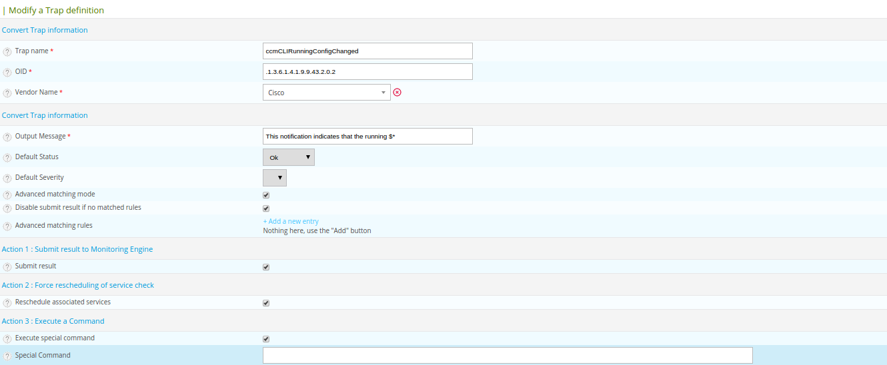
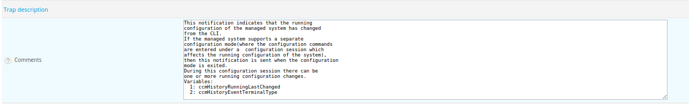

Managing SNMP traps with Centreon¶
Receive SNMP traps with Centreon¶
This section presents the different stages in order to monitor equipment using SNMP traps.
Import of SNMP traps¶
To import SNMP traps, you must follow the following steps:
- Create a Manufacturer linked to the SNMP trap that you created, see this section
- Import MiB in the Centreon web interface, see this section
When import a MiB file, it’s possible that dependences are necessary. In order to find the dependencies of your MIB, you must open your MIB file using a standard text editor, then:
- Locate the line that starts with IMPORTS
- All dependencies required to import your MIB file are after the keyword FROM
Eg. :

In the MIB file shown above, there are four dependencies required to import the MIB: SNMPv2-SMI, SNMPv2-TC, SNMPv2-CONF, SNMP-FRAMEWORK-MIB. Once the import is complete, it is necessary to modify the definition of the trap to change its default status:
- Go into the menu Configuration ==> SNMP Traps
- Click on the trap you want to modify.
Depending on the associated trap message, change the default status of the service. In case the status of the service depends on the received message, use the advanced matching mode.
Create a passive service template¶
To facilitate the configuration of services using SNMP traps, it is more convenient to create a passive service template. In this way, when creating a service there will be more than inherit the service from this model and link the trap or SNMP traps linked to this service.
- Go in the menu Configuration ==> Services
- In the left menu click on Templates
- Click on Add
The table below summarizes all the attributes of a passive service template:
| Attributes | Description |
|---|---|
| Service Configuration Tab | |
| Alias | TRAP |
| Service Template Name | generic-passive-service |
| Check Period | 24x7 |
| Check Command | check_centreon_dummy |
| Args | Status : 0 Output : “No trap since 24 hours” |
| Max Check Attempts | 1 |
| Active Checks Enabled | No |
| Passive Checks Enabled | Yes |
| Data Processing Tab | |
| Check Freshness | TRAP |
| Freshness Threshold | 86400 (24 hours) |
Note
The check_centreon_dummy plugin will be called if no trap is received within 24 hours.
Service creation¶
Then create the service and associate it with the passive service template. You just have to go to the Relations tab and linked in the field Service Trap Relation, SNMP traps that can change the status of the service.
Now Generate configuration files to apply changes.
Send an example trap¶
You can test the reception of SNMP traps on your device. You can send an fake SNMP event to your monitoring server using the utility line snmptrap orders.
Syntax:
snmptrap -v SNMP-VERSION -c COMMUNITY IP-DESTINATION UPTIME TRAP-OID PARAMETER-OID PARAMETER-TYPE PARAMETER-VALUE
With:
- SNMP-VERSION: SNMP version. For the syntax above is necessarily 2c
- COMMUNITY: SNMP Community
- DESTINATION-IP: SNMP trap destination IP. It could be the Centreon central server or a poller.
- TRAP-OID: OID of the SNMP trap
- UPTIME: Time in seconds since last restart of the device. When an empty string is specified, this argument is automatically filled by the binary “snmptrap”.
Any additional parameters to SNMP trap must contain the following 3 variables. They must be repeated for each additional parameter:
- PARAMETER-OID:
- PARAMETER-TYPE: Type of the parameter, ‘i’ for ” Integer ”, ‘s’ for ” String ”, etc.
- PARAMETER-VALUE: related to the parameter value. Quoting a string containing spaces
Trap example for sending “linkUp” event on ‘eth0’ interface:
snmptrap -v2c -c public 192.168.1.1 '' .1.3.6.1.6.3.1.1.5.4 ifIndex i 2 ifDescr s eth0 ifAdminStatus i 1 ifOperStatus i 1
Modify the output¶
Use all the arguments¶
For a SNMP trap, when configuring the output message, the argument $ * will display all the information (the value of arguments) contained within the SNMP trap. However, it is possible to display only certain information contained in the SNMP trap by calling unitarily arguments.
Eg:
The output message “Link down on interface $2. State: $4.” will display only the name of the interface and its status ($2 and $4 argument).
Where can I find the arguments?
The arguments are in the documentation of the MIB manufacturer or in the Comments field of the SNMP trap.
Eg:
To show:
- The index link, use the $1 argument
- The interface name , use the $2 argument
- The administrative state of the interface, use the $3 argument
- The state interface, use the $4 argument
Eg, the following output message displays all the arguments:
Link down on interface: $2 (index: $1). Operational state: $4, Administration state: $3
Active checks after trap reception¶
Reschedule associated services option to actively check the service after the trap reception.
The active service linked in the service configuration is executed.
Execute special command¶
Its possible with Centreontrapd to execute a special command after the reecption of a SNMP trap. Just use the option Execute special command followed by the description of this command.
Use all the arguments (via OID)¶
It’s also possible to have directly an argument value without knowing arguments order ($1, $2, $3, etc.). to do this, use the complete OID number of needed arguments.
Eg:
Link down on interface: @{.1.3.6.1.2.1.2.2.1.2} (index: @{.1.3.6.1.2.1.2.2.1.1}). Operational state: @{.1.3.6.1.2.1.2.2.1.8}, Administration state: @{.1.3.6.1.2.1.2.2.1.7}
Use an external variable¶
It’s also possible to modify the output message by retrieving information via scripts or external commands and get the result to insert it in the output. To do this, within the definition of your SNMP trap, go to the Advanced tab and add one (or more) preexec commands.
Eg:

The first command “snmpget -v 2c -Ovq -c public @HOSTADDRESS@ ifAlias.$1” and allows you to retrieve the alias interface. The “$1” variable is for the argument 1 associated value of linkUp/linkDown traps.
The second command “snmpget -v 2c -Ovq -c public @HOSTADDRESS@ ifSpeed.$1” and allows you to retrieve interface speed. The “$1” variable is for the argument 1 associated value of linkUp/linkDown traps.
In order to exploit the result of the first command in the output, you have to use $p1 argument. For exploiting the result of the second command in output, you have to use $p2 argument.
Therefore, we can deduce the following output message:
Link down on interface: $2 (index: $1). Operational state: $4, Administration state: $3, Alias : $p1, Speed : $p2
Use a Regular expression¶
It’s also possible to modify the output by using a regular expression with Output Transform option. You just have to define the regexp and it will be executed at trap reception.
For example
- ::
- s/|/-/g
Will replace | in the output to -.
Route/Transfer SNMP traps¶
It’s possible to have a SNMP trap concentrator. Eg: Oracle GRID. Oracle GRID is responsible for federating information for all Oracle servers if necessary, it’s the Oracle GRID server who sends the SNMP trap to the monitoring server.
However, from a SNMP trap sent from Oracle GRID, we want to extract the IP address of the host and display the message in the service trap not belonging to Oracle Grid but to the correct host.
To do this, perform the following steps:
- Create a generic trap, with the following parameters:
| Attributes | Description |
|---|---|
| Main Tab | |
| Trap Name | Trap name |
| OID | OID of the trap |
| Default Status | Trap default status |
| Output Message | Custom output message |
| Advanced Tab | |
| Enable routing | Checked |
| Route definition | $2 (In this example $2 argument is for IP address of the host) |
- Create a second trap definition:
| Attributes | Description |
|---|---|
| Main Tab | |
| Trap Name | Trap name (not the same as previous) |
| OID | OID of the trap (same as previous)) |
| Default Status | Trap default status |
| Output Message | Custom output message |
- Associate the first definition to a service (eg PING) of Oracle GRID server
- Associate the second definition to a passive service of the host.
- Generate SNMP traps definitions and restart centreontrapd
In the Route definition field you can use the following arguments:
| Variable name | Description |
|---|---|
| @GETHOSTBYADDR($2)@ | Reverse DNS resolution to know the DNS name from IP address (127.0.0.1 -> localhost) |
| @GETHOSTBYNAME($2)@ | DNS resolution to know the Ip address from the DNS (localhost -> 127.0.0.1) |
Ignore SNMP Trap when resource is on downtime¶
Check Downtime allow centreontrapd to check if the service is not in Downtime status at trap reception. The submission can be cancelled.
Note
It’s only possible with Centreon Broker and on central monitoring.
There are three ways to configure this :
- None : nothing to do, the trap is sent as normal ;
- Real-Time : with this option, a trap sent with a current downtime, the service state is not updated ;
- History : option used to do not acknowledge a trap snmp that concerning a past event during a downtime.
FAQ¶
As seen in Chapter SNMP traps, several elements are involved in the SNMP traps management. In case of problem, it is necessary to check the proper functioning of its architecture, there are several things to check.
Sender settings¶
The first point is to control the configuration of the equipment or application that issued the trap that you should have received. Check IP address or DNS name, the SNMP community and version.
Firewall, routing¶
The second point is to control network firewalls and software permissions and the implementation of a specific routing. If one or more network firewalls are present or if a port translation and/or IP address is in place, make sure the connection is possible between the emitter and the poller. The use of network probes, debug network devices (firewalls and routers) or software tcpdump/wireshark on the poller may help you to confirm receipt of data on UDP port 162.
Snmptrapd¶
After validation of the connection, check the operating status of snmptrapd process (which must be running) and its configuration options. It is possible to enable logging of the process. To do this change the “/etc/sysconfig/snmptrapd.options” file and replace the “OPTIONS” line:
# snmptrapd command line options
# OPTIONS="-On -d -t -n -p /var/run/snmptrapd.pid"
OPTIONS="-On -Lf /var/log/snmptrapd.log -p /var/run/snmptrapd.pid"
Restart the process to take the changes into account. Thus, for any receiving SNMP traps, these events will be listed in the “/var/log/snmptrapd.log” log.
In case you filter by SNMP community, check allowed communities in the configuration file “/etc/snmp/snmptrapd.conf”. If after all these checks, SNMP traps are not included in the log, verify that the process is listening on UDP port 162 for remote equipment using the command:
# netstat -ano | grep 162
udp 0 0 0.0.0.0:162 0.0.0.0:* off (0.00/0/0)
If not, change the listening port of the process.
Note
Don’t forget to deactivate the logs after your check. Otherwise, the volume of the logs can be very important.
Centreontrapdforward¶
Once the snmptrapd process is validated, check the centreontrapdforward process. The first step is to check the access parameters of this process snmptrapd in the file “/etc/snmp/snmptrapd.conf”:
Check that snmptrapd service executes centreontrapdforward. To do this, edit the file /etc/snmp/snmptrapd.conf and verify that its contains:
traphandle default su -l centreon -c "/usr/share/centreon/bin/centreontrapdforward"
If path to the file is incorrect, change it and restart the snmptrapd process. You can check the proper functioning of binary centreontrapdforward by checking the configuration part of centreontrapdforward.
Centreontrapd¶
The next process to check is Centreontrapd. This daemon allows to connect a SNMP trap to a passive service linked to an host in Centreon using IP address or DNS from distant equipment. To check its operation, you should check the centreontrapd configuration settings.
You can check the proper functioning of binary centreontrapdforward by checking the configuration part of centreontrapd.
CentCore¶
CentCore daemon must be running to forward information from Centreontrapd to the monitoring engine as an external command. Enable the debug mode via Administration ==> Options ==> Debug menu and restart process.
Note
You can edit debug severity level in /etc/sysconfig/centcore file.
If any external command are sent to the monitoring engine please check the path to “$cmdFile”” in /etc/centreon/conf.pm configuration file. The path should be /var/lib/centreon/centcore.cmd for a central Centreon server.
Poller¶
The monitoring engine must receive external commands from Centcore process in order to change status and output of the passive service. Please check the event log. for Centreon Engine, the path is /var/log/centreon-engine/centengine.log. you should find lines as:
[1352838428] EXTERNAL COMMAND: PROCESS_SERVICE_CHECK_RESULT;Centreon-Server;Traps-SNMP;2;Critical problem
[1352838433] PASSIVE SERVICE CHECK: Centreon-Server;Traps-SNMP;2;Critical problem
If only the external command appears but not the consideration thereof by the scheduler (“PASSIVE SERVICE CHECK”), there may be a system clock problem synchronizing issue. The server is late and the order will be processed later, either in advance and the order will not be taken into account.
Centreon¶
To display the result in Centreon the monitoring engine must forward using NEB module information to the broker to store them into database. Centreon will display result from “centreon_storage” database. If you can reach Centreon web interface you must see the change of the output and maybe the status of the passive service. If any change appears a connection failure between the monitoring engine and the broker can be the root cause of this issue. Problems can be:
- The monitoring engine doesn’t load the NEB module to connect to the distant broker.
- The NEB module settings are wrong to connect to the distant broker.
- A firewall stops the connection.
Detailed diagram¶
You will find below a detailed diagram of all the processes used and/or present at the reception of an SNMP trap: